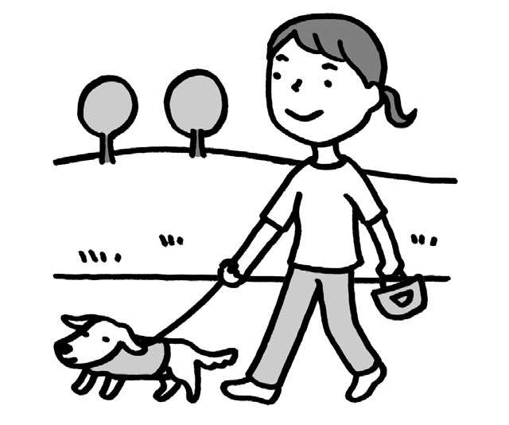
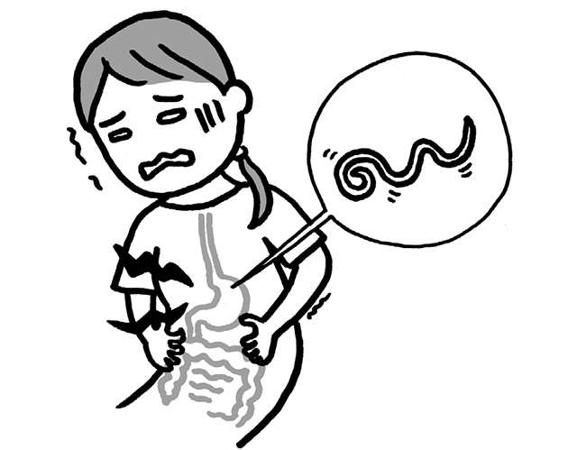
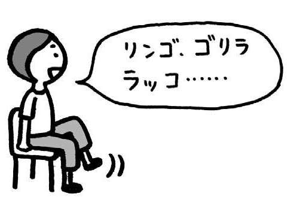
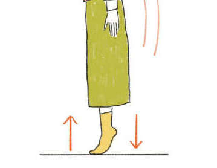
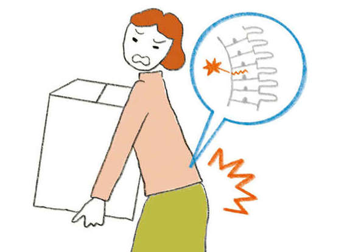
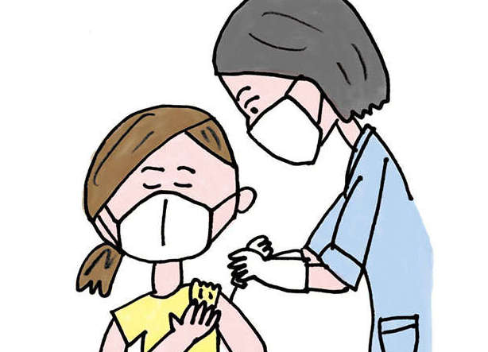
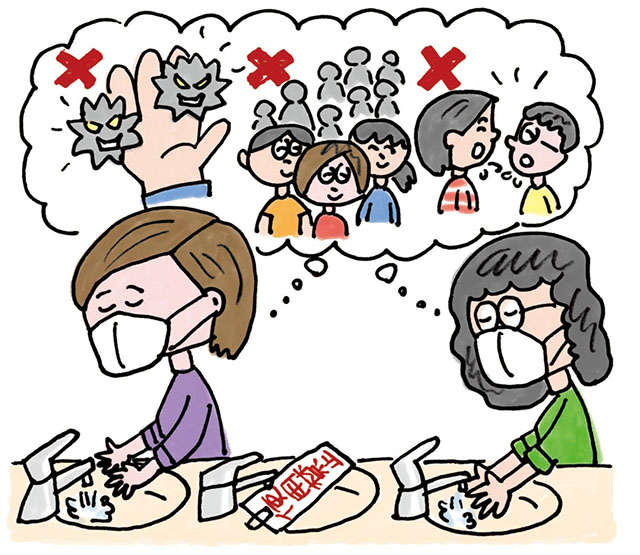
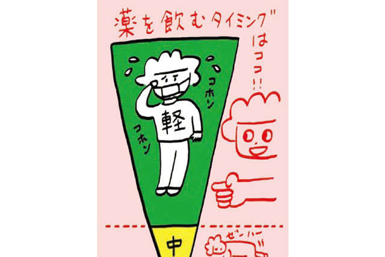
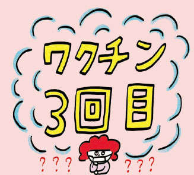
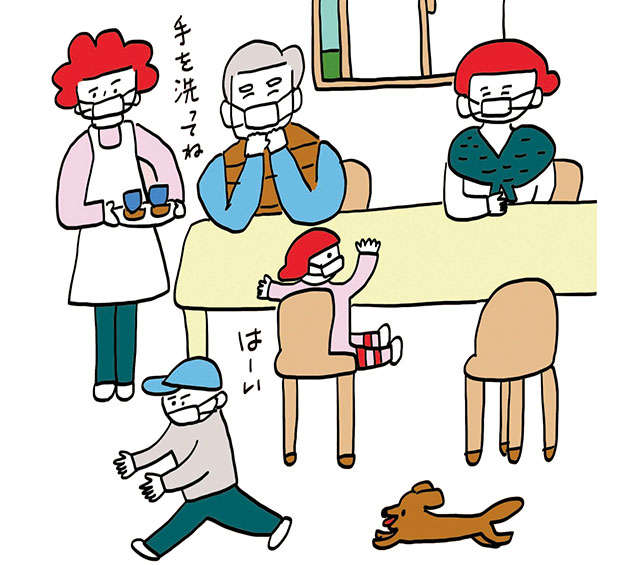

关键词为“预防”的文章
1-

低压扰乱自主神经，浑身不舒服…… 发布日期：拥有宠物“可以将护理或死亡的风险降低一半”。国家环境研究所的研究揭示了原因......
-

低压扰乱自主神经，浑身不舒服…… 发布日期：食物中毒案例No.1...预防寄生虫引起的“异尖线虫病”要点
-

低压扰乱自主神经，浑身不舒服…… 发布日期：用“声音”和“运动”预防痴呆！ “动时”激活脑血流
-

低压扰乱自主神经，浑身不舒服…… 发布日期：预防骨质疏松引起的“骨折”！可以做的食物可以增强骨骼...
-

低压扰乱自主神经，浑身不舒服…… 发布日期：老人骨折有生命危险！易患骨质疏松症的人群特点及主要原因...
-
低压扰乱自主神经，浑身不舒服…… 发布日期：
新冠：“有办法区分它与流感吗？”回答各种问题......
-
低压扰乱自主神经，浑身不舒服…… 发布日期：
新冠“由于大量有关变异病毒的信息而感到焦虑”解决各种问题...
-

低压扰乱自主神经，浑身不舒服…… 发布日期：新冠：“我应该等待第三次疫苗接种吗？”各种问题得到解答……
-

低压扰乱自主神经，浑身不舒服…… 发布日期：新冠：“针对新的变异病毒需要采取什么对策？”回答各种问题...
-

低压扰乱自主神经，浑身不舒服…… 发布日期：新冠：“第三种疫苗有什么副作用？”“我应该吃什么药？”各种问题......
-

低压扰乱自主神经，浑身不舒服…… 发布日期：新冠“我需要接种第三次疫苗吗？”回答各种问题...
-

低压扰乱自主神经，浑身不舒服…… 发布日期：新冠：“我们应该继续采取预防措施多久？”“我们可以和朋友聚会了吗？”各种问题......